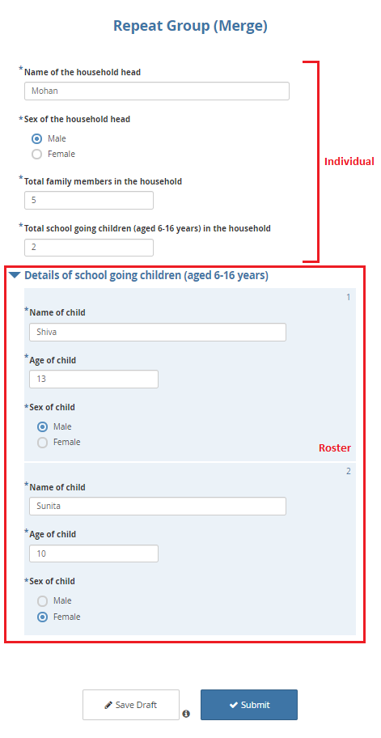
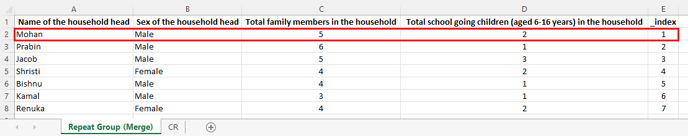
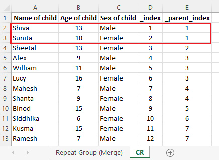

Busca en nuestra documentación, explora nuestros recursos y visita nuestro Foro de la Comunidad para obtener información más detallada
Última actualización: 6 Apr 2022
Como se ilustra en el artículo de ayuda Grupos y grupos de repetición en el Formbuilder, puedes usar grupos de repetición para cumplir ciertos requisitos de una encuesta. También puede ser necesario analizar los datos de los grupos de repetición que se recolectaron. Al descargar los datos del servidor (en formato XLS), deberías ver los datos con la siguiente estructura:
La primera hoja con el nombre Repeat Group (Merge) que se ve en la imagen anterior contiene los datos individuales de la encuesta, mientras que la segunda hoja con el nombre CR contiene los datos del grupo de repetición.
En los conjuntos de datos descargados, deberías tener una hoja más que el número de grupos de repetición. Por ejemplo, si incluiste un grupo de repetición en el formulario de encuesta, deberías tener dos hojas en tu conjunto de datos.
Este artículo de ayuda también ilustrará la diferencia entre los datos individuales y los datos del grupo de repetición. Luego mostrará los pasos para combinarlos en un único conjunto de datos a través de Power Query en Excel.
Combinar datos individuales y datos del grupo de repetición a través del sistema no está disponible actualmente, pero es posible hacerlo a través de Power Query en Excel. Se eligió Excel sobre otros programas porque es una hoja de cálculo de uso generalizado y disponible en casi todas las computadoras. Además, es relativamente fácil de usar.
Los datos individuales son información que generalmente se captura una sola vez en una entrevista. Los datos del grupo de repetición, en cambio, se capturan más de una vez (por ejemplo, los detalles de todos los miembros de una familia que viven en un mismo hogar) dentro de la misma entrevista. El número de casos en los datos individuales puede ser igual al de los datos del grupo de repetición, pero nunca puede superarlo, mientras que el número de casos en los datos del grupo de repetición generalmente supera al de los datos individuales, aunque a veces puede ser igual (pero nunca menor).
Un formulario de encuesta completado, como se muestra a continuación, ilustra visualmente las diferencias entre los datos individuales y los datos del grupo de repetición. Ten en cuenta que todos los datos utilizados en este artículo de ayuda son hipotéticos.

Cualquier dato recolectado fuera del grupo de repetición es un dato individual, y cualquier dato recolectado dentro de un grupo de repetición es un dato del grupo de repetición.
Los datos descargados en formato XLS también muestran la diferencia entre datos individuales y datos del grupo de repetición.
Cada registro (como se muestra en la imagen a continuación), bajo Name of the household head,
Sex of the household head, Total family members in the household y
Total school going children (aged 6-16 years) in the household de la primera
hoja Repeat Group (Merge) corresponde a datos individuales.

Este conjunto de datos de ejemplo tiene un total de 7 entrevistas como datos individuales.
De igual manera, cada registro (como se muestra en la imagen a continuación),
bajo Name of child, Age of child y Sex of child de la segunda hoja, CR,
corresponde a datos del grupo de repetición.

Así, este conjunto de datos de ejemplo tiene un total de 12 registros como datos del grupo de repetición.
Nota: Al descargar un conjunto de datos del servidor, también deberías poder ver otras variables (variables de metadatos) si no han sido filtradas. Se han eliminado de este conjunto de datos de ejemplo para simplificar.
Si observas detenidamente las imágenes compartidas anteriormente, puedes ver la
columna _index con el valor «1» en la primera hoja Repeat Group (Merge).
De igual manera, también hay una columna _parent_index con el valor «1» en la
segunda hoja CR. _index y _parent_index son variables adicionales creadas
por el sistema para gestionar los grupos de repetición. Son las variables de
coincidencia necesarias para combinar los datos individuales y los datos del
grupo de repetición en uno solo.
A continuación se presentan dos enfoques para combinar datos individuales y datos del grupo de repetición en un único conjunto de datos a través de Power Query en Excel. Puedes usar cualquiera de los siguientes enfoques:
Para el primer enfoque, debes tener abierto tu conjunto de datos XLS. Para más detalles, consulta el video a continuación:
Abre el conjunto de datos que contiene tanto los datos individuales como los datos del grupo de repetición.
Selecciona todos los datos de la primera hoja (datos individuales).
En la ventana Datos, selecciona Desde tabla o rango.
Aparecerá una caja de diálogo (Crear tabla). Selecciona Aceptar.
Selecciona el icono Cerrar y cargar que se encuentra en la esquina superior izquierda de la pantalla. Deberías ver dos opciones en el menú desplegable: Cerrar y cargar y Cerrar y cargar en….
Selecciona Cerrar y cargar en….
Aparecerá una caja de diálogo (Importar datos). Selecciona Solo crear conexión y luego haz clic en Aceptar.
Has creado una tabla de consulta para los (datos individuales).
Ahora puedes ir a la segunda hoja, (datos del grupo de repetición), y seguir exactamente los mismos pasos que realizaste anteriormente.
Con esto has creado una tabla de consulta para los (datos del grupo de repetición).
En la ventana Datos, selecciona Obtener datos. Desde allí, selecciona Combinar consultas y luego Combinar.
Aparecerá una caja de diálogo Combinar.
Carga ambas tablas de consulta. Una vez cargadas las dos tablas, selecciona
la variable de coincidencia _index de la primera tabla. De igual manera,
selecciona la variable de coincidencia _parent_index de la segunda tabla.
En cuanto selecciones ambas variables de coincidencia, deberías poder ver
La selección coincide con … de … filas de la primera tabla. La tabla de
consulta debería estar combinada ahora.
Para expandir la tabla combinada, marca todas las variables que deseas incluir en el conjunto de datos combinado. También puedes desmarcar Usar el nombre de columna original como prefijo para conservar el nombre de variable original en el conjunto de datos combinado. Cuando hayas terminado, selecciona Aceptar.
Ahora deberías tener el conjunto de datos combinado final.
Una vez más, selecciona el icono Cerrar y cargar que se encuentra en la esquina superior izquierda de la pantalla. Deberías ver dos opciones en el menú desplegable: Cerrar y cargar y Cerrar y cargar en….
Selecciona Cerrar y cargar. Con este último clic has combinado tus datos individuales y datos del grupo de repetición en un único conjunto de datos.
Usa el segundo enfoque cuando aún no hayas abierto tu conjunto de datos XLS y solo tengas abierto un nuevo libro de Excel. Para más detalles, consulta el video a continuación:
Abre un nuevo libro de Excel.
En la ventana Datos, selecciona Obtener datos. Desde allí, selecciona Desde archivo y luego Desde libro.
Busca el archivo en tu computadora. Una vez que lo encuentres, selecciona el archivo y haz clic en Importar.
Aparecerá una caja de diálogo Navegador. Aquí, marca Seleccionar varios elementos y los nombres de hoja CR y Repeat Group (Merge) que aparecen visibles. Una vez marcados, el botón Cargar en la parte inferior de la caja de diálogo se activará.
Selecciona el botón Cargar. Deberías ver dos opciones en el menú desplegable: Cargar y Cargar en…. Selecciona Cargar.
Con esto has creado tablas de consulta para los (datos individuales) y los (datos del grupo de repetición).
En la ventana Datos, selecciona Obtener datos. Desde allí, selecciona Combinar consultas y luego selecciona Combinar.
Aparecerá una caja de diálogo Combinar.
Carga ambas tablas de consulta. Una vez cargadas las dos tablas, selecciona
la variable de coincidencia _index de la primera tabla. De igual manera,
selecciona la variable de coincidencia _parent_index de la segunda tabla.
En cuanto selecciones ambas variables de coincidencia, deberías poder ver
La selección coincide con … de … filas de la primera tabla. La tabla de
consulta debería estar combinada ahora.
Para expandir la tabla combinada, marca todas las variables que deseas incluir en el conjunto de datos combinado. También puedes desmarcar Usar el nombre de columna original como prefijo para conservar el nombre de variable original en el conjunto de datos combinado. Cuando hayas terminado, selecciona Aceptar.
Ahora deberías tener el conjunto de datos combinado final.
Una vez más, selecciona el icono Cerrar y cargar que se encuentra en la esquina superior izquierda de la pantalla. Deberías ver dos opciones en el menú desplegable: Cerrar y cargar y Cerrar y cargar en….
Selecciona Cerrar y cargar. Con este último clic has combinado tus datos individuales y datos del grupo de repetición en un único conjunto de datos.
Las diferencias entre los dos enfoques están en la carga de la tabla de consulta. Una vez cargadas las tablas de consulta, deberás seguir los mismos pasos para combinar los datos individuales y los datos del grupo de repetición.
La exportación de grupos de repetición no está disponible en formato CSV. Deberás descargar los datos en formato XLS.
Microsoft Power Query para Excel es un complemento de Excel. Puedes descargarlo a través de este sitio de descarga de Microsoft. Funciona mejor con Excel para Microsoft 365 o Excel 2021, Excel 2019, Excel 2016, Excel 2013 y Excel 2010. Para más detalles, consulta el sitio de soporte de Microsoft.
Para practicar, puedes acceder al XLSForm aquí y al conjunto de datos de ejemplo aquí que se utilizaron en este artículo.
¿Encontraste lo que buscabas? ¿La información fue clara? ¿Faltaba algo?
¡Comparte tus comentarios para ayudarnos a mejorar este artículo!
KoboToolbox es mantenido por Kobo Inc.